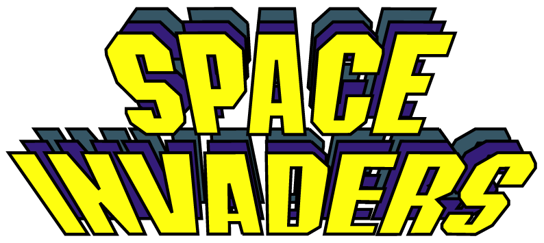
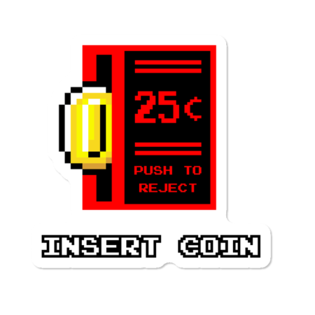

 Space Invaders is a 1978 arcade game created by Tomohiro Nishikado.
Space Invaders is a 1978 arcade game created by Tomohiro Nishikado.
Within the shooter genre, Space Invaders was the first fixed shooter and set the template for the shoot 'em up genre.
The goal is to defeat wave after wave of descending aliens with a horizontally moving laser to earn as many points as possible.
An urban legend states that Space Invaders' popularity led to a shortage of 100-yen coins in Japan.
By: Marc Lozano Martinez
Level:
Score:
Constrols:
Move: Left arrow, Right arrow
Shoot: Spacebar
Reset Level: R
Skip Level: Q
RESULTS:

(Press the insert coin button to play again)